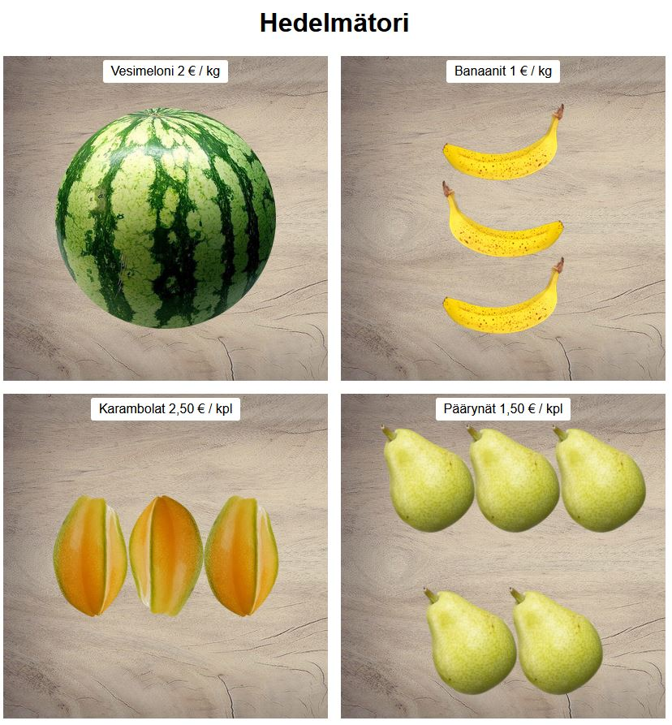
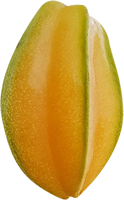
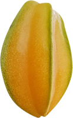
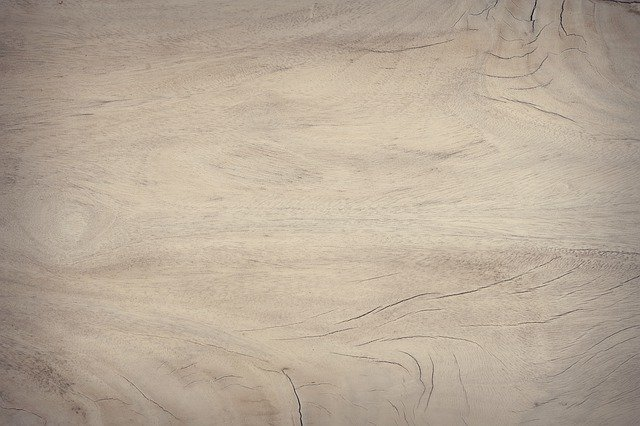
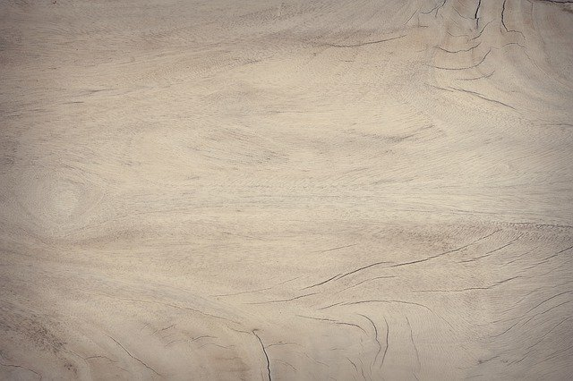
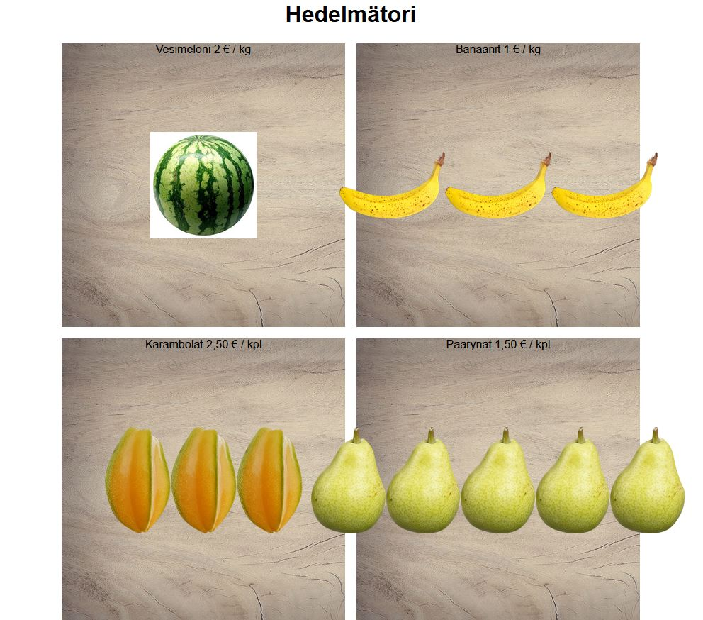

Hedelmätori

Demossa käytetyt kuvat (voit myös käyttää omia)
Raahaa kuvat projektikansioon tai paina 'Tallenna kuva nimellä' niin saat täysikokoisen kuvan 


 

HTML
- Tee demos-kansioon d9 kansio, mihin lisäät index.html ja style.css tiedostot
- Linkitä style.css html-tiedoton headiin
- Tee bodyn sisälle main-tagi (tarkoittaa pääsisältöaluetta)
- Lisää elementit mainin sisälle:
- Pääotsikko Hedelmätori
- section-tagin, jonka sisälle tulee 4 diviä
- kullakin divillä on oma luokka esim. (melons, bananas, carambolas, pears) mutta luokkien nimet voit päättää itse
- Nyt sivulla on 4 kpl ns. hedelmälaatikoita, mihin lisätään vaihteleva määrä kunkin hedelmän kuvaa
- Lisää ensimmäiseen laatikkoon 1 vesimelonin kuva (olipa se sitten marja tai hedelmä)
- Lisää toiseen laatikkoon 3 banaania
- Lisää kolmanteen laatikkoon 3 tähtihedelmää
- Lisää neljänteen laatikkoon 5 päärynää
- Muista laittaa myös alt-tekstit
CSS
- Vaihda bodyn fontiksi Arial tai valitse Google-fonteista
- Keskitä pääotsikon teksti
- Keskitä main-tagi ( margin: 0 auto; width: fit-content; )
- Tee section-tagista grid-elmentti:
- Tee template, jossa on 2 riviä (400px) ja 2 saraketta (400px)
- Lisää elementtien väliin tyhjää tilaa (gap)
- Aseta sectionin sisällä oleville diveille taustakuva wood.jpg
- Aseta taustakuva täyttämään koko divi
- Tee sectionin sisällä olevista diveistä flex-elementtejä
- Keskitä flex-elementin sisältö vaaka- ja pystysuunnassa
- Aseta position: relative; (tarvitaan hintojen lisäyksessä)
- Rajoita kaikkien kuvien max korkeus ja max leveys 150px
- Lisää object-fit: contain; jolloin mittasuhteet säilyvät
- Nimi/hintatekstit lisätään CSS:before selektioilla
- Asetellaan ensin kaikki before-elementit parent-elementtinsä yläreunaan
- Kirjoita kunkin hedelmän tiedot before-elementeillä:
- position: absolute viittaa elementtiin, jolla on position: relative
- Siten section div::before asettuu suhteessa section div elementtiin
- top: 0 tarkoittaa elementin yläreunaa (bottom: 0 olisi elementin alareuna)
Sivuston tulisi tässä vaiheessa näyttää suunnilleen tältä
-
Vesimeloni
- Suurenna melonia asettamalla sen max leveys ja max korkeus 300px
- Käytä ympyrän mallista clippy css poistamaan kuvan valkoiset reunat
- Voit myös lisätä melonille loputtoman pyörimisanimaation (w3)
-
Banaanit
- Käännä .bananas flexin suunta pystysuuntaan (flex-direction: column;)
- Käytä nth-child ja scaleX funktioita peilaamaan keskimmäinen banaani
-
Karambolat
- Käytä nth-child ja rotate funktiota kääntämään keskimmäinen karambola ylösalaisin
- Päärynät
- Ota flexin automaattinen rivitys (flex-wrap) käyttöön flex-wrap: wrap;
- Aseta kaikki päärynät -45 asteen kulmaan